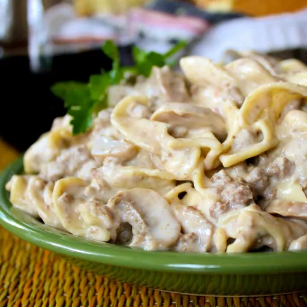

Simple Hamburger Stroganoff

Description
I created this beef stroganoff recipe with hamburger because I love the taste of a good stroganoff.
Ingredients
- 1 (16 ounce) package egg noodles
- 1 pound lean ground beef
- 1 (8 ounce) package cream cheese, cut into pieces
- 1 (6 ounce) can chopped mushrooms, with liquid
- 1 (.75 ounce) packet dry brown gravy mix
Steps
- Fill a large pot with lightly salted water and bring to a rapid boil.
- Cook egg noodles at a boil until tender yet firm to the bite, 7 to 9 minutes.
- Drain.